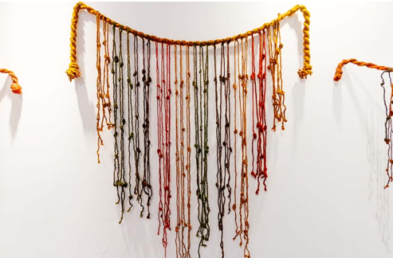
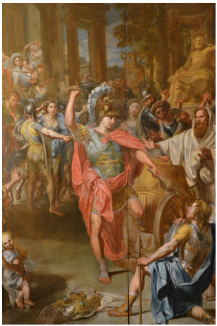

Historia de los Nudos
Desde las civilizaciones antiguas hasta la formalización matemática moderna, los nudos han acompañado al ser humano como símbolo, herramienta y objeto de estudio.
Orígenes culturales
Quipu — Usado por los Incas y culturas andinas
Los nudos quipu eran un sistema de registro numérico y administrativo que consistía en cordones principales con cordones colgantes y diferentes tipos de nudos para representar cifras. Los encargados de leer y crear quipus (quipucamayocs) eran considerados en su cultura como poseedores de memoria casi “mística”. Los españoles dejaron crónicas que hablaban de “nudos que guardaban historias” haciendo alusión a este intrigante uso de los nudos.

Nudo Tyet o Nudo de Isis — Egipto antiguo
Este nudo fue usado como amuleto funerario y símbolo protector, se creía que le brindaba protección al difunto en la otra vida. También se portaba como veneración a la diosa Isis y considerándolo un símbolo de fertilidad, ligado a la magia sanadora de la diosa.

Nudo Gordiano — Leyenda griega
Cuenta la leyenda que se tenía el nudo gordiano resguardando el carro sagrado se tenía la creencia de quien desatara aquel nudo sería rey de Asia; Alejandro Magno se atribuye el haber desatado este nudo cuando lo cortó con su espada, convirtiéndolo en metáfora de soluciones audaces a problemas complejos.

Nudos Celtas — Entrelazados eternos
Este tipo de nudos es muy usual de ver en la decoración en manuscritos, joyería y tallados en piedra. Estos diseños siempre constan de enlaces entre distintos nudos, sin comienzo ni fin simbolizando la eternidad, cada uno de los cruces interconectados simbolizan vida, muerte y renacimiento, y al igual que en otras culturas se les atribuían propiedades protectoras.

Nudos Chinos (中国结)
Los nudos chinos son un arte identitario de su cultura usados de forma decorativa y comúnmente usado en bodas y fechas importantes como amuletos de buena suerte y adornos festivos. Muchos nudos chinos tienen nombres y significados: amor, longevidad, fortuna, formando en sí mismo una clasificación de nudos. Hay evidencias arqueológicas antiguas que muestran que ya eran símbolos desde hace milenios.

Mizuhiki — Japón
Uso: cintas y nudos ceremoniales (envoltorio de regalos, sobres de dinero), cada estilo de nudo transmite una intención (alegría, condolencia, compromiso). Folclor/mitología: el tipo de nudo en un mizuhiki comunica deseo de continuidad (no desatar) o de separación (desatabilidad), y forma parte del lenguaje ritual social japonés. (Vinculado al uso ritual de los nudos en la cultura material japonesa.)

Nudos marineros
Uso: imprescindible en navegación — amarras, velas, aparejos; la destreza en nudos determinaba seguridad y eficacia en la navegación. Folclor/mitología: proliferaron leyendas de marineros que “leían” los nudos; además el término “knot” como unidad de velocidad procede de una práctica real: medir la velocidad con una sonda con nudos a intervalos.

Nudo de Heracles / Hércules
Uso: motivo en amuletos y joyería (pulseras, fibras trenzadas) y en ataduras simbólicas para protección, matrimonio y salud. Folclor/mitología: asociado a Heracles/Hércules como símbolo protector; en algunos contextos se usaba en rituales para garantizar salud y unión (nudos de compromiso).

Nudo sin fin — Símbolo dhármico
Uso: símbolo religioso y decorativo (uno de los “Ocho símbolos auspiciosos” en el budismo tibetano; aparece también en arte indio y chino). Folclor/mitología: representa la interdependencia, la unión de sabiduría y compasión, y el ciclo sin fin de samsara; aparece en textos muy antiguos y en gran cantidad de iconografía religiosa.